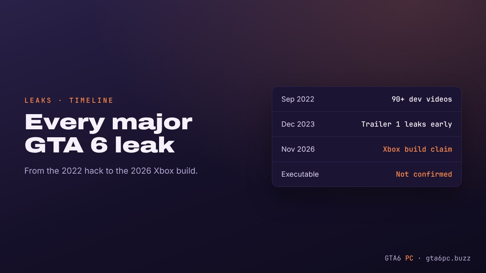

Every major GTA 6 leak, from 2022 to the Cyberleek Xbox build
Few games have leaked as much as GTA 6. Here's a clear timeline of the major leaks, what came out of each, and how Rockstar responded.

September 2022: the development videos
More than 90 videos of GTA 6 in early development were posted online after a hack. They showed early versions of the game's world and its two lead characters. Rockstar confirmed the leak, said it was extremely disappointed, and said development would continue as planned.
The hacker, a teenager linked to the Lapsus$ group, was later dealt with by the UK courts, which ordered him to be held in a secure hospital.
December 2023: the first trailer
Rockstar planned to release GTA 6's first trailer on December 5, 2023. A low-quality copy leaked online the evening before, so Rockstar released the official trailer early. It went on to break YouTube viewing records for a non-music video in its first 24 hours.
2024–2026: smaller leaks and claims
In the years before launch, there was a steady stream of rumors, supposed insider claims and fake leaks. Cyberleek began making claims about GTA 6 before launch as well. Many "leaks" in this period turned out to be fake, a good reminder to wait for credible confirmation.
November 2026: the Cyberleek Xbox build
Around the November 19 console launch, Cyberleek posted what it called a near-complete Xbox build of GTA 6, about 209 GB and labeled version 1.0.2.1, while holding back the main executable. It tied the executable to its crypto token's value and promised it for November 23. The build hasn't been fully verified. Details in our leak explainer and Cyberleek update.
What the leaks mean for PC players
- None of the leaks give you a legitimate way to play GTA 6 on PC.
- Every leak is followed by a wave of fake downloads and malware. See our scam guide.
- The official PC version is reported for early 2027.
Last updated . We update this page when Rockstar announces anything new.